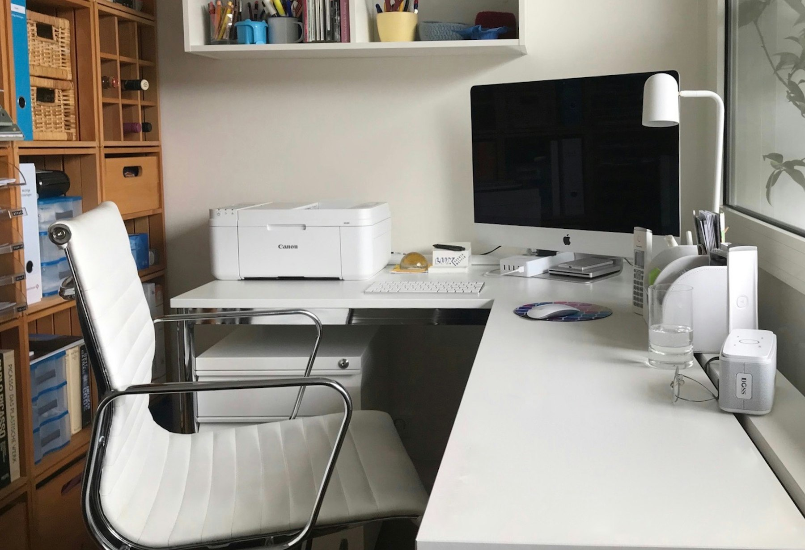

TL;DR
This productivity checklist is crafted for freelance consultants overwhelmed by administrative tasks.
It outlines actionable steps and decision frameworks to streamline workflows, allowing freelancers to focus on delivering high-quality client projects.

Understanding Freelance Consultants' Unique Admin Challenges
Who this is for: freelance consultants often face unique administrative challenges that can overwhelm their focus and hinder client projects.
The common types of administrative tasks they encounter include invoicing, client communication, project management, and scheduling.
Research shows that freelancers can lose significant amounts of time due to ineffective management of these tasks—sometimes upwards of 40% of their work hours.
The inability to prioritize administrative duties leads to delays in client deliverables and increased stress.
Recognizing these burdens is the first step toward streamlining workflow.
Why Traditional Advice Falls Short for Freelancers
Freelancers often find that traditional advice on productivity doesn’t resonate with their needs.
Common productivity strategies, like time-blocking or mandatory tool sets, are often misaligned with the project-based nature of freelance work.
Unlike employees, freelancers have varied work hours and responsibilities that require flexibility.
Additionally, many advice-givers assume access to stable resources—like a dedicated office or support staff—that ordinary consultants simply don’t have.
This disconnect leaves freelancers even more confused and frustrated in their attempts to manage administrative workloads effectively.
Mapping Your Admin Workflow: A Tactical Approach
To streamline administrative tasks, defining a clear workflow is essential.
Start by categorizing tasks into three main groups: client-facing tasks, internal management, and financial tracking.
A flowchart can help visualize these steps.
Once mapped out, integrate tools like project management software (e.g., Trello or Asana) for task tracking, and accounting software (e.g., QuickBooks or FreshBooks) for financial management.
This method keeps all tasks organized and ensures that nothing falls through the cracks, allowing freelancers to focus on high-value client projects instead of getting bogged down in paperwork.
Essential Setup Steps for Optimizing Your Process
Setting up an effective workflow requires actionable steps.
Start by selecting the right tools tailored to your specific needs.
Use tools like Trello for project management and Google Workspace for email and document sharing.
Next, establish a system for organizing task priority levels; this could be through a 'high, medium, low' categorization.
Create a routine for review, such as weekly planning sessions, to adjust priorities based on client needs and deadlines.
This proactive approach will support ongoing efficiency, allowing you to better manage your administrative tasks.
Decision-Making Rules for Choosing Admin Tools
Choosing the right tools is critical to effective task management.
Establish criteria for selection based on ease of use, cost, and integration capabilities.
For instance, if you're frequently managing client communications, tools like Slack for instant messaging or Zoom for video calls could be essential.
Evaluate both your current workload and long-term plans when making decisions; select tools that not only serve immediate needs but also scale with your growing business.
Making decisions based on these rules will minimize wasted time evaluating irrelevant options.

Avoiding Common Mistakes in Admin Management
When managing administrative tasks, freelancers often stumble into several common mistakes.
Overcomplicating the system by incorporating too many tools can lead to confusion and frustration; stick with a few key resources that streamline your process instead.
Neglecting task organization further compounds the issue; without clear prioritization, even minor tasks can feel overwhelming.
These mistakes create a significant tradeoff, leaving less time for client engagement and reducing the overall quality of your work.
Your Productivity Checklist: A Ready-to-Use Template
To facilitate your administrative process, here's a checklist to streamline your tasks:
1.
List client communication tasks (emails, calls) and prioritize them.
2.
Schedule regular invoicing and payment tracking.
3.
Categorize administrative duties by urgency and impact.
4.
Review your tool effectiveness weekly.
Be mindful, however, that this checklist may not apply during peak project periods where flexibility is more crucial than structure.
Trade-offs must be made as required; adapt your use of the checklist to suit varying workloads.
FAQ
How can I customize this checklist for my specific freelance work?
Tailor the checklist by adjusting the tasks based on your specific projects and client demands. Regularly revisit and update the categories based on workload changes.
What tools are recommended for managing administrative tasks?
Tools like Trello for project management, Google Workspace for communication, and QuickBooks for invoicing are effective in assisting freelancers streamline their administrative work.
How often should I review my administrative workflow?
Aim to review your workflow weekly to make necessary adjustments based on changes in client workload and other responsibilities.
Photo credits
- Photo 1: Evelyn Geissler on Unsplash (https://unsplash.com/@egeissler) (https://unsplash.com/photos/white-printer-on-white-table-2yeV8n03SEE)
- Photo 2: Mitchell Luo on Unsplash (https://unsplash.com/@mitchel3uo) (https://unsplash.com/photos/black-and-silver-claw-hammer-beside-red-and-black-hand-tool-G5i9LQ7sPOw)
- Photo 3: Compagnons on Unsplash (https://unsplash.com/@sigmund) (https://unsplash.com/photos/black-tablet-computer-on-brown-wooden-table-taxUPTfDkpc)
- Photo 4: Jakob Owens on Unsplash (https://unsplash.com/@jakobowens1) (https://unsplash.com/photos/a-laptop-computer-sitting-on-top-of-a-desk-15IJv-APJSE)
- Photo 5: Crissy Jarvis on Unsplash (https://unsplash.com/@crissyjarvis) (https://unsplash.com/photos/brown-abaca-gdL-UZfnD3I)
- Photo 6: Kevin Ku on Unsplash (https://unsplash.com/@ikukevk) (https://unsplash.com/photos/brown-analog-clock-aiyBwbrWWlo)
- Photo 7: Mille Sanders on Unsplash (https://unsplash.com/@millesanders) (https://unsplash.com/photos/white-calendar-oWpartNqAnM)